Test automation
Development of UI and regression tests with Cypress and Selenium. Experience using Gauge and Cucumber to structure automated test scenarios.
Cypress · Selenium · Gauge · Cucumber
CRISTIAN NAZARIO LOHN · QA ANALYST
QA Analyst
Manual and automated testing, product awareness, and attention to detail to support reliable software releases.
Opens the English resume in Google Drive in a new tab, where it can be downloaded. View projects on GitHub (opens in a new tab)Joinville, SC · Brazil
Experience at


01 / ABOUT ME
I'm Cristian Nazario Lohn, a QA analyst working with enterprise applications since 2015. My experience spans manual and automated testing, change impact analysis, and data validation throughout the software development lifecycle.
At TOTVS, Quiq, AP Interactive, and Neogrid, I have planned and executed tests, investigated system behavior, and supported release decisions. I work with Cypress, Selenium, API testing, and SQL queries, collaborating with teams that use Agile methodologies.
I am also studying AI practices for test automation and expanding my knowledge of performance testing.
02 / SKILLS
Development of UI and regression tests with Cypress and Selenium. Experience using Gauge and Cucumber to structure automated test scenarios.
Cypress · Selenium · Gauge · Cucumber
API testing with Postman and REST Assured, along with SQL queries and XML validation to check data integrity in business processes.
Postman · REST Assured · SQL · XML
Impact analysis for features and fixes, effort estimation, and test execution planning. Exploratory testing to investigate workflows, usability, and potential issues before release.
Impact analysis · Planning · Exploratory testing
03 / EXPERIENCE
Test analysis and planning for Oracle-integrated systems.
Impact analysis · Test planning · Oracle · Exploratory testing
Exploratory testing and automation to support feature and release validation.
Selenium · REST Assured · Cucumber
Remote validation of system changes.
Impact analysis · Release validation
Data validation and information integrity checks for business processes.
SQL · XML · Data integrity
Development of automated UI tests.
Selenium · Gauge · UI testing
The start of my career in software quality assurance and automation.
Selenium · Gauge
04 / EDUCATION
Anhanguera Educacional
2014 — 2016
Brazilian undergraduate technology degree (Tecnólogo).
Anhanguera Educacional
Dec 2023 — Sep 2024
Specialization in software engineering, quality, and testing.
Anhanguera Educacional
Jan 2024 — May 2024
Lato sensu postgraduate program in software quality management.
Anhanguera Educacional
Dec 2023 — Oct 2024
Lato sensu postgraduate program.
Additional training in automation, APIs, and programming fundamentals.
Studying AI practices for test automation and expanding my knowledge of performance testing methodologies.
English: professional working proficiency.
05 / BEYOND WORK
A little about me, beyond the code.
I'm Cristian Nazario Lohn, Helena's dad. Technology is part of my life, and my story extends beyond testing and code. Here, I share my professional journey, the projects I create, and a little of my personal life.
Get in touch to discuss projects, challenges, and opportunities.